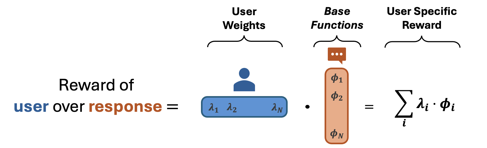

Our framework, PReF, assumes that user preferences lie in a shared, low-dimensional space. Instead of learning a separate reward function for each user, we represent user-specific preferences as a linear combination of base reward functions:

This factorization enables us to personalize responses efficiently without requiring extensive user data. The key insight is that personalization reduces to estimating a small set of user-specific weights \(\lambda_i\), rather than learning an entirely new reward model per user.